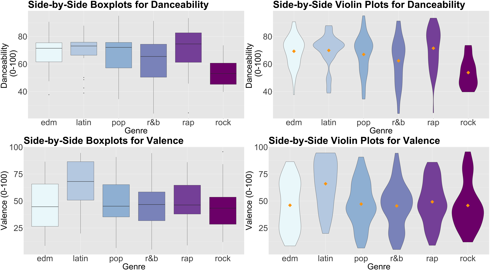

Main Statistical Inquiry
- We want to determine which Poisson regression model fits the data better: Model 1 or Model 2.
- Then, via
glm()andcrabs, we obtain our regression estimates.
GLMs: Model Selection and Multinomial Logistic Regression
By the end of this lecture, you should be able to:

crabs (Brockmann, 1996) is a dataset detailing the counts of satellite male crabs residing around a female crab nest.To perform model selection, let us estimate two Poisson regression models with n_males as a response:
\[\begin{align*} \textbf{Model 1:} & \\ & h(\lambda_i) = \log(\lambda_i) = \beta_0 + \beta_1 X_{\texttt{width}_i}. \\ \textbf{Model 2:} & \\ & h(\lambda_i) = \log (\lambda_i) = \beta_0 + \beta_1 X_{\texttt{width}_i} + \beta_2 X_{\texttt{color_darker}_i} + \\ & \qquad \qquad \qquad \quad \beta_3 X_{\texttt{color_light}_i} + \beta_4 X_{\texttt{color_medium}_i}. \end{align*}\]
glm() and crabs, we obtain our regression estimates.Heads-up: The usual baseline model is the saturated or full model, which perfectly fits the data because it allows a distinct Poisson mean \(\lambda_i\) for the \(i\)th observation in the training dataset (\(i = 1, \dots, n\)), unrelated to the \(k\) regressors.
\[D_k = -2 \log \left( \frac{\hat{\mathscr{l}}_k}{\hat{\mathscr{l}}_f} \right) = -2 \left[ \log \left( \hat{\mathscr{l}}_k \right) - \log \left( \hat{\mathscr{l}}_f \right) \right].\]
\(D_k\) expresses how much our given model deviates from the full model on log-likelihood scale:
\[\begin{gather} \hat{\lambda}_i = \exp{\left( \hat{\beta_0} + \hat{\beta}_1 x_{i,1} + \dots + \hat{\beta}_k x_{i,k} \right)} \\ D_k = 2 \sum_{i = 1}^n \left[ y_i \log \left( \frac{y_i}{\hat{\lambda}_i} \right) - \left( y_i - \hat{\lambda}_i \right) \right] \end{gather}\]
\[\begin{gather*} H_0: \text{Our}\textbf{ Model with $k$ regressors} \\ \text{ fits the data better than the } \textbf{Saturated Model.} \\ H_a: \text{Otherwise.} \end{gather*}\]
poisson_model_2!\[\begin{align*} \textbf{Model 2:} & \\ h(\lambda_i) &= \log (\lambda_i) \\ &= \beta_0 + \beta_1 X_{\texttt{width}_i} + \beta_2 X_{\texttt{color_darker}_i} + \\ & \qquad \beta_3 X_{\texttt{color_light}_i} + \beta_4 X_{\texttt{color_medium}_i}. \end{align*}\]
deviance provides \(D_k\) (residual deviance), which is the test statistic. Asymptotically, we have the following null distribution: \[
D_k \sim \chi^2_{n - (k + 1)}.
\]df.residual in our glance() output) are the difference between the training set size \(n\) and the number of regression parameters in our model (including the intercept \(\beta_0\)).Rpchisq():poisson_model_2 is not correctly specified when compared to the saturated model.\[\begin{align*} \textbf{Model 1:} & \\ & h(\lambda_i) = \log(\lambda_i) = \beta_0 + \beta_1 X_{\texttt{width}_i}. \\ \textbf{Model 2:} & \\ & h(\lambda_i) = \log (\lambda_i) = \beta_0 + \beta_1 X_{\texttt{width}_i} + \beta_2 X_{\texttt{color_darker}_i} + \\ & \qquad \qquad \qquad \quad \beta_3 X_{\texttt{color_light}_i} + \beta_4 X_{\texttt{color_medium}_i}. \end{align*}\]
\[\begin{gather*} H_0: \textbf{Model 1} \text{ fits the data better than } \textbf{Model 2} \\ H_a: \textbf{Model 2} \text{ fits the data better than } \textbf{Model 1}. \end{gather*}\]
Resid. Dev) for Model 2 (poisson_model_2) in row 2 and \(D_1\) (column Resid. Dev) the deviance for Model 1 (poisson_model) in row 1.Deviance) for the analysis of deviance is given by \(\Delta_D = D_1 - D_2 \sim \chi^2_{3}\).Df) under \(H_0\) for this specific case.poisson_model_2, that also includes the color of the female prosoma.Heads-up: The degrees of freedom are the regression parameters of difference between both models. Formally, this nested hypothesis testing is called the likelihood-ratio test.
Heads-up: \(\mbox{AIC}_k\) penalizes for including more regressors in the model. Hence, it discourages overfitting. This is why we select that model with the smallest \(\mbox{AIC}_k\).
R!glance() shows us the \(\mbox{AIC}_k\) by model.Following the results of the
AICcolumn, we choosepoisson_model_2overpoisson_model.
Heads-up: The differences between AIC and BIC will be more pronounced in datasets with large sample sizes \(n\). As the BIC penalty of \(k \log (n)\) will always be larger than the AIC penalty of \(2k\) when \(n > 7\), BIC tends to select models with fewer regressors than AIC.
R!Following the results of the
AICcolumn, we already chosepoisson_model_2overpoisson_model. Nonetheless, theBICis penalizing thepoisson_model_2for having more model parameters, sopoisson_modelwould be chosen under this criterion.
Nominal: We have categories that do not follow any specific order.
Ordinal: The categories, in this case, follow a specific order.
Let us check the mind map in the lecture notes
A sub-sample of the Spotify song data originally collected by Kaylin Pavlik (kaylinquest) and distributed through the
Rfor Data Science TidyTuesday project.
Copyright © 2025 Spotify AB. Spotify is a registered trademark of the Spotify Group.
spotify dataset is a sample of \(n = 350\) songs with different variables by column.spotify dataset, suppose we want to conduct an inferential study.A. We could draw causation conclusions across all music platforms.
B. We could draw association conclusions on the Spotify platform.
C. We could draw association conclusions across all music platforms.
D. We could draw causation conclusions on the Spotify platform.
edm) catalogue on Spotify. Nevertheless, I do not have access to their whole song database.Still, I would like to:
edm is compared to other genres on the platform, and by how much.edm is compared to other genres on the platform, and by how much.spotify dataset:
genre: genre of the playlist where the song belongs (a categorical and nominal variable).danceability: a numerical score from 0 (not danceable) to 100 (danceable) based on features such as tempo, rhythm, etc.valence: a numerical score from 0 (the song is more negative, sad, angry) to 100 (the song is more positive, happy, euphoric).Heads-up: Note that factor-type
genrehas six levels (edmrefers to electronic dance music andr&bto rhythm and blues). Moreover, from a coding perspective,edmis the baseline level (it is located on the left-hand side in thelevels()output).
genre.genre composition, we have an acceptable number of songs to draw inference from.genre is a discrete nominal response.danceability and valence:

genre is categorical and nominal (our response of interest) subject to the numerical regressors danceability and valence.edm and latin.edm is the baseline level (i.e., it appears on the left-hand side in the levels() output).\[ Y_i = \begin{cases} 1 \; \; \; \; \mbox{if the genre is } \texttt{latin},\\ 0 \; \; \; \; \mbox{if the baseline genre is } \texttt{edm}. \end{cases} \]
danceability and valence scores for the \(i\)th song, respectively):\[\begin{align*} \mbox{logit}(p_i) &= \log\left(\frac{p_i}{1 - p_i}\right) \nonumber \\ &= \log \left[ \frac{P(Y_i = \texttt{latin}\mid X_{i,\texttt{dance}}, X_{i,\texttt{val}})}{P(Y_i = \texttt{edm} \mid X_{i,\texttt{dance}}, X_{i,\texttt{val}})}) \right] \nonumber \\ &= \beta_0 + \beta_1 X_{i,\texttt{dance}} + \beta_2 X_{i,\texttt{val}}. \end{align*}\]
Rvalence is statistically significant for the response genre (\(p\text{-value} < .01\)).exponentiate = TRUE):For each unit increase in the
valencescore in the Spotify catalogue, the song is 1.05 times more probable to belatinthanedm.
What if our response is nominal and has more than two categories?
Heads-up: Categories \(1, 2, \dots, m\) are merely labels here. Thus, they do not implicate an ordinal scale.
\[ P(Y_i = 1) = p_{i,1} \;\;\;\; P(Y_i = 2) = p_{i,2} \;\; \dots \;\; P(Y_i = m) = p_{i,m} \quad \text{where} \]
\[ \sum_{j = 1}^m p_{i,j} = p_{i,1} + p_{i,2} + \dots + p_{i,m} = 1. \]
edm in our context).genre as a response subject to danceability and valence as continuous regressors.edm will be the baseline:\[\begin{align*} \eta_i^{(\texttt{latin},\texttt{edm})} &= \log\left[\frac{P(Y_i = \texttt{latin} \mid X_{i, \texttt{dance}}, X_{i, \texttt{val}})}{P(Y_i = \texttt{edm} \mid X_{i, \texttt{dance}}, X_{i, \texttt{val}})}\right] \\ &= \beta_0^{(\texttt{latin},\texttt{edm})} + \beta_1^{(\texttt{latin},\texttt{edm})} X_{i, \texttt{dance}} + \beta_2^{(\texttt{latin},\texttt{edm})} X_{i, \texttt{val}} \end{align*}\]
\[\begin{align*} \frac{P(Y_i = \texttt{latin}\mid X_{i,\texttt{dance}}, X_{i,\texttt{val}})}{P(Y_i = \texttt{edm} \mid X_{i,\texttt{dance}}, X_{i,\texttt{val}})} &= \exp\left[\beta_0^{(\texttt{latin},\texttt{edm})}\right] \times \exp\left[\beta_1^{(\texttt{latin},\texttt{edm})} X_{i,\texttt{dance}}\right] \times \\ & \qquad \exp\left[\beta_2^{(\texttt{latin},\texttt{edm})} X_{i,\texttt{val}}\right] \end{align*}\]
\[\begin{gather*} p_{i,\texttt{edm}} = P(Y_i = \texttt{edm} \mid X_{i,\texttt{dance}}, X_{i,\texttt{val}}) = \\ \frac{1}{1 + \exp\big(\eta_i^{(\texttt{latin},\texttt{edm})}\big) + \exp\big(\eta_i^{(\texttt{pop},\texttt{edm})}\big) + \exp\big(\eta_i^{(\texttt{r&b},\texttt{edm})}\big) + \exp\big(\eta_i^{(\texttt{rap},\texttt{edm})}\big) + \exp\big(\eta_i^{(\texttt{rock},\texttt{edm})}\big)} \end{gather*}\]
\[\begin{align*} \eta_i^{(\texttt{pop},\texttt{edm})} &= \log\left[\frac{P(Y_i = \texttt{pop} \mid X_{i, \texttt{dance}}, X_{i, \texttt{val}})}{P(Y_i = \texttt{edm} \mid X_{i, \texttt{dance}}, X_{i, \texttt{val}})}\right] \\ &= \beta_0^{(\texttt{pop},\texttt{edm})} + \beta_1^{(\texttt{pop},\texttt{edm})} X_{i, \texttt{dance}} + \beta_2^{(\texttt{pop},\texttt{edm})} X_{i, \texttt{val}} \\ \eta_i^{(\texttt{r&b},\texttt{edm})} &= \log\left[\frac{P(Y_i = \texttt{r&b} \mid X_{i, \texttt{dance}}, X_{i, \texttt{val}})}{P(Y_i = \texttt{edm} \mid X_{i, \texttt{dance}}, X_{i, \texttt{val}})}\right] \\ &= \beta_0^{(\texttt{r&b},\texttt{edm})} + \beta_1^{(\texttt{r&b},\texttt{edm})} X_{i, \texttt{dance}} + \beta_2^{(\texttt{r&b},\texttt{edm})} X_{i, \texttt{val}} \\ \eta_i^{(\texttt{rap},\texttt{edm})} &= \log\left[\frac{P(Y_i = \texttt{rap} \mid X_{i, \texttt{dance}}, X_{i, \texttt{val}})}{P(Y_i = \texttt{edm} \mid X_{i, \texttt{dance}}, X_{i, \texttt{val}})}\right] \\ &= \beta_0^{(\texttt{rap},\texttt{edm})} + \beta_1^{(\texttt{rap},\texttt{edm})} X_{i, \texttt{dance}} + \beta_2^{(\texttt{rap},\texttt{edm})} X_{i, \texttt{val}} \end{align*}\]
\[\begin{align*} \eta_i^{(\texttt{rock},\texttt{edm})} &= \log\left[\frac{P(Y_i = \texttt{rock} \mid X_{i, \texttt{dance}}, X_{i, \texttt{val}})}{P(Y_i = \texttt{edm} \mid X_{i, \texttt{dance}}, X_{i, \texttt{val}})}\right] \\ &= \beta_0^{(\texttt{rock},\texttt{edm})} + \beta_1^{(\texttt{rock},\texttt{edm})} X_{i, \texttt{dance}} + \beta_2^{(\texttt{rock},\texttt{edm})} X_{i, \texttt{val}}. \end{align*}\]
\[\begin{align*} \frac{P(Y_i = \texttt{pop}\mid X_{i,\texttt{dance}}, X_{i,\texttt{val}})}{P(Y_i = \texttt{edm} \mid X_{i,\texttt{dance}}, X_{i,\texttt{val}})}& = \exp\left[\beta_0^{(\texttt{pop},\texttt{edm})}\right] \times \exp\left[\beta_1^{(\texttt{pop},\texttt{edm})} X_{i,\texttt{dance}}\right] \times \\ & \qquad \exp\left[\beta_2^{(\texttt{pop},\texttt{edm})} X_{i,\texttt{val}}\right] \\ \frac{P(Y_i = \texttt{r&b}\mid X_{i,\texttt{dance}}, X_{i,\texttt{val}})}{P(Y_i = \texttt{edm} \mid X_{i,\texttt{dance}}, X_{i,\texttt{val}})} &= \exp\left[\beta_0^{(\texttt{r&b},\texttt{edm})}\right] \times \exp\left[\beta_1^{(\texttt{r&b},\texttt{edm})} X_{i,\texttt{dance}}\right] \times \\ & \qquad \exp\left[\beta_2^{(\texttt{r&b},\texttt{edm})} X_{i,\texttt{val}}\right] \end{align*}\]
\[\begin{align*} \frac{P(Y_i = \texttt{rap}\mid X_{i,\texttt{dance}}, X_{i,\texttt{val}})}{P(Y_i = \texttt{edm} \mid X_{i,\texttt{dance}}, X_{i,\texttt{val}})} &= \exp\left[\beta_0^{(\texttt{rap},\texttt{edm})}\right] \times \exp\left[\beta_1^{(\texttt{rap},\texttt{edm})} X_{i,\texttt{dance}}\right] \times \\ & \qquad \exp\left[\beta_2^{(\texttt{rap},\texttt{edm})} X_{i,\texttt{val}}\right] \\ \frac{P(Y_i = \texttt{rock}\mid X_{i,\texttt{dance}}, X_{i,\texttt{val}})}{P(Y_i = \texttt{edm} \mid X_{i,\texttt{dance}}, X_{i,\texttt{val}})} &= \exp\left[\beta_0^{(\texttt{rock},\texttt{edm})}\right] \times \exp\left[\beta_1^{(\texttt{rock},\texttt{edm})} X_{i,\texttt{dance}}\right] \times \\ & \qquad \exp\left[\beta_2^{(\texttt{rock},\texttt{edm})} X_{i,\texttt{val}}\right]. \end{align*}\]
\[\begin{gather*} p_{i,\texttt{latin}} = P(Y_i = \texttt{latin} \mid X_{i,\texttt{dance}}, X_{i,\texttt{val}}) = \\ \frac{\exp\big(\eta_i^{(\texttt{latin},\texttt{edm})}\big)}{1 + \exp\big(\eta_i^{(\texttt{latin},\texttt{edm})}\big) + \exp\big(\eta_i^{(\texttt{pop},\texttt{edm})}\big) + \exp\big(\eta_i^{(\texttt{r&b},\texttt{edm})}\big) + \exp\big(\eta_i^{(\texttt{rap},\texttt{edm})}\big) + \exp\big(\eta_i^{(\texttt{rock},\texttt{edm})}\big)} \\ p_{i,\texttt{pop}} = P(Y_i = \texttt{pop} \mid X_{i,\texttt{dance}}, X_{i,\texttt{val}}) = \\ \frac{\exp\big(\eta_i^{(\texttt{pop},\texttt{edm})}\big)}{1 + \exp\big(\eta_i^{(\texttt{latin},\texttt{edm})}\big) + \exp\big(\eta_i^{(\texttt{pop},\texttt{edm})}\big) + \exp\big(\eta_i^{(\texttt{r&b},\texttt{edm})}\big) + \exp\big(\eta_i^{(\texttt{rap},\texttt{edm})}\big) + \exp\big(\eta_i^{(\texttt{rock},\texttt{edm})}\big)} \end{gather*}\]
\[\begin{gather*} p_{i,\texttt{r&b}} = P(Y_i = \texttt{r&b} \mid X_{i,\texttt{dance}}, X_{i,\texttt{val}}) = \\ \frac{\exp\big(\eta_i^{(\texttt{r&b},\texttt{edm})}\big)}{1 + \exp\big(\eta_i^{(\texttt{latin},\texttt{edm})}\big) + \exp\big(\eta_i^{(\texttt{pop},\texttt{edm})}\big) + \exp\big(\eta_i^{(\texttt{r&b},\texttt{edm})}\big) + \exp\big(\eta_i^{(\texttt{rap},\texttt{edm})}\big) + \exp\big(\eta_i^{(\texttt{rock},\texttt{edm})}\big)} \\ p_{i,\texttt{rap}} = P(Y_i = \texttt{rap} \mid X_{i,\texttt{dance}}, X_{i,\texttt{val}}) = \\ \frac{\exp\big(\eta_i^{(\texttt{rap},\texttt{edm})}\big)}{1 + \exp\big(\eta_i^{(\texttt{latin},\texttt{edm})}\big) + \exp\big(\eta_i^{(\texttt{pop},\texttt{edm})}\big) + \exp\big(\eta_i^{(\texttt{r&b},\texttt{edm})}\big) + \exp\big(\eta_i^{(\texttt{rap},\texttt{edm})}\big) + \exp\big(\eta_i^{(\texttt{rock},\texttt{edm})}\big)} \end{gather*}\]
\[\begin{gather*} p_{i,\texttt{rock}} = P(Y_i = \texttt{rock} \mid X_{i,\texttt{dance}}, X_{i,\texttt{val}}) = \\ \frac{\exp\big(\eta_i^{(\texttt{rock},\texttt{edm})}\big)}{1 + \exp\big(\eta_i^{(\texttt{latin},\texttt{edm})}\big) + \exp\big(\eta_i^{(\texttt{pop},\texttt{edm})}\big) + \exp\big(\eta_i^{(\texttt{r&b},\texttt{edm})}\big) + \exp\big(\eta_i^{(\texttt{rap},\texttt{edm})}\big) + \exp\big(\eta_i^{(\texttt{rock},\texttt{edm})}\big)}. \end{gather*}\]
Now that we removed the restriction of only one link function, we also removed the distributional assumption for \(Y_i\). Hence, our model has no distributional assumption.
A. TRUE
B. FALSE
From the statistical point of view, the model is now non-parametric.
A. TRUE
B. FALSE
genre as a regressor and danceability OR valence as the responses.nnet, we use the function multinom(), which obtains the corresponding estimates.tidy() from the broom package along with argument conf.int = TRUE to get the 95% CIs by default.edm, we can conclude the following with \(\alpha = 0.05\) on the Spotify platform:
danceability in edm versus r&b and rock.valence in edm versus latin.\(\beta_2^{(\texttt{latin},\texttt{edm})}\): for each unit increase in the
valencescore in the Spotify catalogue, the song is \(1.05\) times more likely to belatinthanedm.
\(\beta_1^{(\texttt{r&b},\texttt{edm})}\): for each unit increase in the
danceabilityscore in the Spotify catalogue, the odds for a song for beingr&bdecrease by \((1 - 0.963) \times 100\% = 3.7\%\) compared toedm.
\(\beta_1^{(\texttt{rock},\texttt{edm})}\): for each unit increase in the
danceabilityscore in the Spotify catalogue, the odds for a song for beingrockdecrease by \((1 - 0.918) \times 100\% = 8.2\%\) compared toedm.
danceability score of 27.5 and valence of 30.R coding functions might not be entirely available for the multinom() models.
DSCI 562 - Regression II